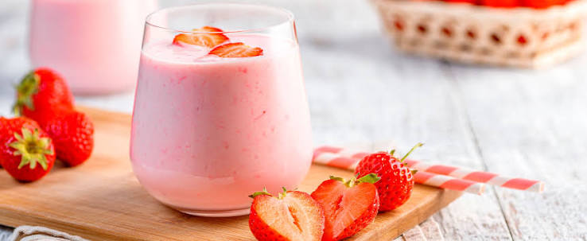

The strawberry smoothie is a refreshing, healthy, and ultra-creamy drink, perfect for breakfast or an afternoon snack. The key to achieving the ideal smoothie consistency—distinct from a standard fruit shake—is using frozen fruit.